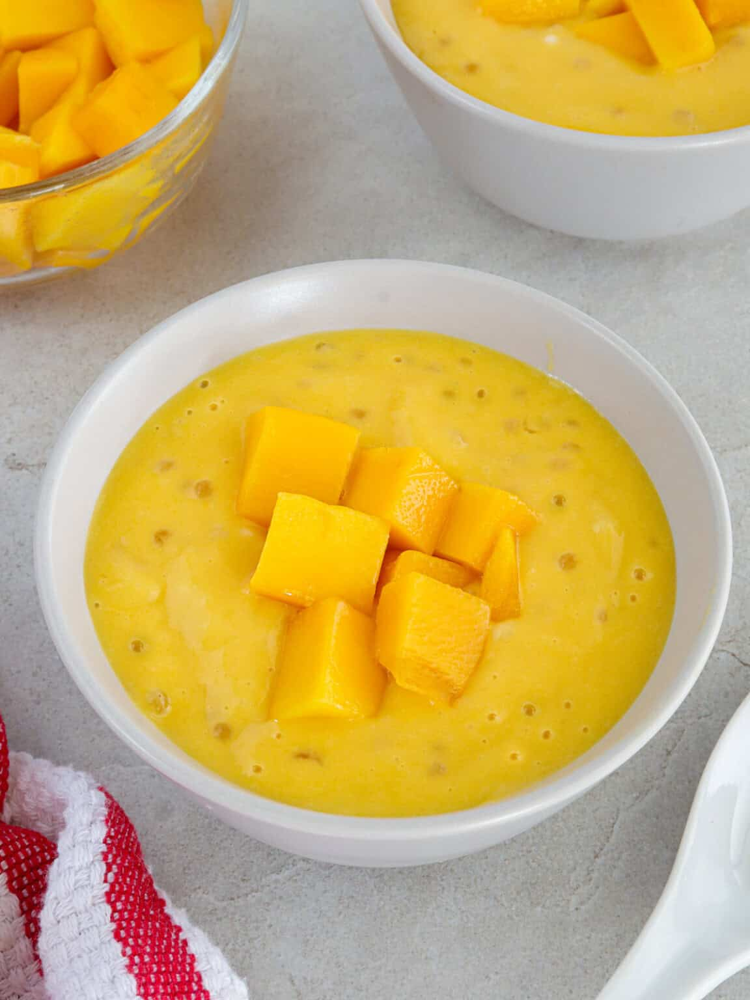

Mango Sago

Ingredients
| Mangoes |
| Mini Sago Pearls |
| Water |
| Coconut Milk |
| Water |
| Sugar |
Preparation
| Step 1 |
| Cook sago- Bring about 2 inches of water to a boil in a pot. Add sago and cook for 7 to 10 minutes, stirring regularly to prevent sticking. Turn off the heat and cover until the pearls are translucent. Drain and rinse well in a fine mesh sieve under cold water to remove excess starch. |
| Step 2 |
| Prepare the mangoes- Peel the fruit cut flesh from the pits and cube four mangoes, setting aside some diced fruit as a garnish. |
| Step 3 |
| Process the mango base. Combine the diced fruit, coconut milk, and sugar in a blender or food processor. Blend until smooth and silky. |
| Step 4 |
| Combine the blended mango and cooked mini sago pearls. Refrigerate the mixture for a few hours to chill and for the flavors to meld before serving. |